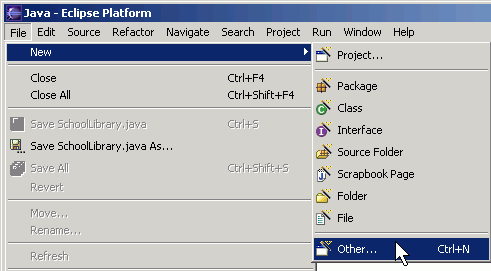
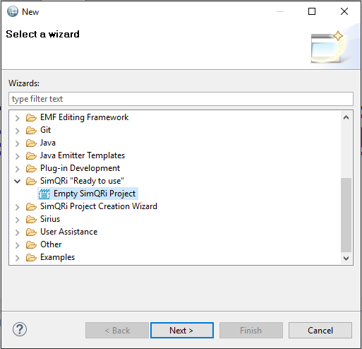
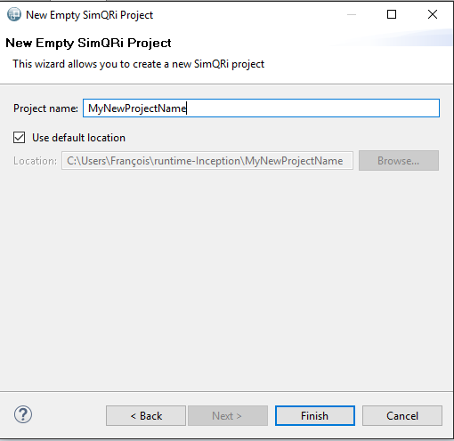
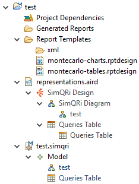

New Project - Step 1
Once your Obeo Designer/Eclipse IDE is open and the SimQRi plug-in is installed, you will be able to create a new SimQRi project.
First, Go to File menu -> new -> other and select the "SimQRi "Ready to use" folder. Choose then "Empty SimQRi Project". Click on "Next" to finish this first step.


New Project - Step 2
Then, you will have to specify a name for your new project in a similar window :

Click on "Finish". Your Empty SimQRi Project is now initialized!
New Project - Step 3
For the moment (Update 1.2), the configuration of the project is similar to this one :

The "representation.aird" file contains both graphical representations (modeling tool and Queries Table). The ".simqri" extended file contains the semantical elements and their properties that you will instanciate during your experience. For further informations, please check the other sections.